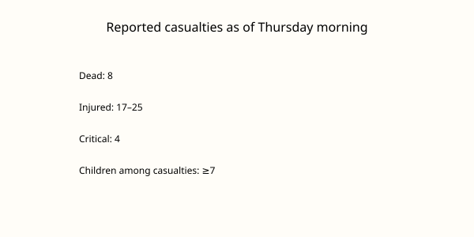

New York · building collapse · 12 November 2026
Death toll reaches eight after a three-story building collapses into a Flatbush construction site.

What is agreed across desks
A three-story mixed-use building at 1321 Flatbush Avenue in the Flatbush neighborhood of Brooklyn collapsed around 4 p.m. Eastern Time on Wednesday, 11 November 2026, and slid into an adjacent lot where excavation for a new building was under way. The FDNY received the call reporting people trapped. By Thursday morning the death toll had risen to eight, according to Mayor Zohran Mamdani and the Fire Department. At least 17 people were hospitalized, with figures in some reports reaching 19–25 total patients including the dead; four were in critical condition. Three firefighters were among the injured. At least seven children were among the casualties, though officials did not specify how many of the dead were children. Rescue crews worked through the night with search dogs, pickaxes, and power saws, pulling survivors from the rubble including a pregnant woman in the early hours. The cause remains under investigation; Buildings Commissioner Ahmed Tigani noted that excavation was occurring next door when the structure fell. A reception center opened at the Flatbush YMCA.
What is only a quote
Mayor Mamdani’s social-media statement that there are “no words for a loss of this magnitude” is an official expression of grief. It is not a forensic finding. FDNY Commissioner Lillian Bonsignore’s description of the work as “dangerous and perilous” and the statement that every move is choreographed are operational characterizations. They do not identify a failed structural member. Family accounts of individual victims, such as the brother of construction worker Luis Caguana, are personal and are labeled as such by outlets that carry them.
Mechanism a reader needs
Older masonry and wood-frame buildings can lose lateral support when an adjacent lot is excavated without adequate shoring or underpinning. The 1930-era structure sat at the edge of the pit; once the ground under or beside its foundation was removed, the building had no remaining resistance to sliding or collapsing into the open hole. That physical sequence is the ordinary explanation investigators examine first. Weather is a second variable: rain and wind can further destabilize a partially cleared pile, which is why officials warned that the search would remain hazardous. The number of people inside at the moment of collapse is not yet known because occupancy records and 911 calls do not produce an instant headcount. That is why the toll rose through the night as additional bodies were recovered and why the count of the missing remains provisional.
The photograph above is a type view of Flatbush Avenue taken in a different section of the street. It is not a picture of 1321 Flatbush Avenue, the rubble, or any victim. Using a street photograph supplies geographic context without employing an event-specific news-agency image that cannot be freely reused.
What this story is not
It is not a completed engineering report. It is not a finding of criminal negligence. It is not a statement about the broader housing market or about any particular developer’s other projects. The eight confirmed deaths and the ongoing search are the checkable facts; everything else is either a quote or a hypothesis still under examination by city agencies.

Source articles and scores
| Outlet | Headline | T | N | C |
|---|---|---|---|---|
| AP | Death toll rises to 8 in Brooklyn building collapse as rescuers dig through rubble | 97 | 0 | 100 |
| Spectrum News NY1 | Death toll reaches 8 after Brooklyn building collapse, officials say | 96 | 0 | 100 |
| CNN | Brooklyn building collapse live updates | 94 | 0 | 95 |
Images: Wikimedia Commons type photograph of Flatbush Avenue (Flatbush_Avenue,_Park_Slope,_Brooklyn,_NY.jpg) via Special:FilePath. Caption states it is not the collapse scene. onerror falls back to committed SVG. Chart is original local SVG from reported numbers. No news-agency pixels used as src.